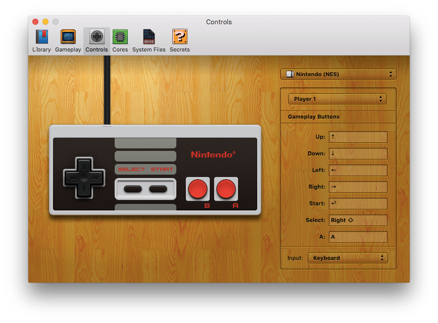

OpenEmu makes it simple to map controls. It is compatible with keyboard controls and any HID Compliant controller. Simply connect your controller, select it in the "Input" dropdown, and if your controller is on this list, it will be auto-mapped. If your controller is not auto-mapped or you wish to remap some controls from the default, all you have to do is select which button you would like to map to your controller and press the button on the controller to which you would like to map it.

OpenEmu has the ability to map more than just what the original console supports. Under the "Special Keys" section in the key mapper, the following features are available:
Some of the above are hidden by default and must be manually enabled in the Secret preferences.
Note:
If you are having trouble pairing a PlayStation controller over Bluetooth: DualShock Controller Pairing
See Wiimote and Wii U Pro pairing for pairing Wii controllers, as they require an extra step.